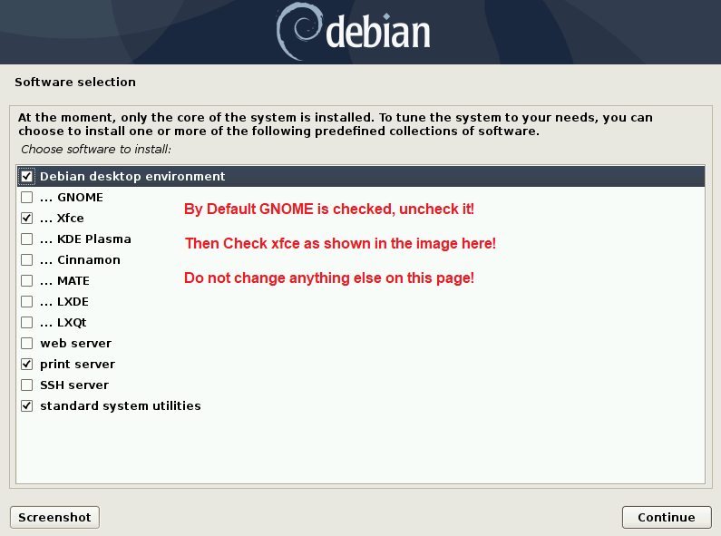

Probe Basic deb Install
Probe Basic .deb Installation Guide for use with Debian Bookworm and LinuxCNC version 2.9 or Later
Important Requirements
The Deb file install in this doc page is intended for AMD64 pc installs only, do not try to use for arm64/pi installs.
Probe Basic is currently designed for 1920x1080 screen sizes only!
Probe Basic requires graphics hardware that supports OpenGL 3.2 and OpenGL Shading Language (GLSL) 1.50 or later
Probe Basic is tested on xfce4, during install of Debian 12 ISO:
DO NOT enter a Root password during installation, leave blank and skip this page.
During installation, this screen below will appear, be sure to uncheck gnome and check xfce as pictured below. No other changes on this page are needed.

Download the Linux Debian 12 Bookworm ISO Image File
Download from: https://www.debian.org/releases/bookworm/debian-installer/
Select the Linux Debian 12 Bookworm Netinst CD ISO from the above link. You will need to make a bootable DVD or USB thumb drive depending on how you plan to install. The software below is extremely easy and works flawlessly with Linux Debian OS images:
https://www.balena.io/etcher/?ref=etcher_update
We recommend using a 2-4GB USB drive for quicker flashing.
Installation Steps
Create your flash stick for LinuxCNC and proceed to install and boot the system. (Note: It is advised to have an ethernet cable internet connection during install).
Select the graphical installation option.
Follow the steps on screen to complete installation.
When you reach the Linux Desktop Selection Page, uncheck the GNOME option and check the XFCE4 option.
After installation, open the main terminal and run the following commands:
sudo apt update sudo apt upgrade
Installing Probe Basic
Requirements:
Debian 12 Bookworm
Python 3.11
LinuxCNC 2.9 or higher
xfce4 desktop environment
OpenGL 1.50 or Later graphics support
QtPyVCP
hiyapyco
Download and Install linuxcnc from deb file:
In a terminal, enter the following lines one at a time and press enter after each:
cd ~ cd Downloads sudo dpkg -i linuxcnc-uspace_2.9.8_amd64.debOnce you have installed LinuxCNC, open it and start the axis sim briefly and then shut it down to ensure the installation was successful.
Download the following files:
https://repository.qtpyvcp.com/repo/probe-basic-dev/python3-probe-basic_0.6.6-3.dev_amd64.deb https://repository.qtpyvcp.com/repo/qtpyvcp-dev/python3-qtpyvcp_5.1.0-3.dev_amd64.deb https://repository.qtpyvcp.com/repo/hiyapyco/python3-hiyapyco_0.5.1-1_all.deb
Installation Commands
Navigate to the download directory, right-click, and select “Open Terminal Here”. Run the following commands:
sudo apt install debhelper-compat dh-python python3-setuptools python3-yaml python3-pyqt5.qtmultimedia python3-pyqt5.qtquick qml-module-qtquick-controls libqt5multimedia5-plugins python3-dev python3-docopt python3-qtpy python3-pyudev python3-psutil python3-markupsafe python3-vtk9 python3-pyqtgraph python3-simpleeval python3-jinja2 python3-deepdiff python3-sqlalchemy qttools5-dev-tools python3-serialsudo dpkg -i python3-hiyapyco_0.5.1-1_all.debsudo dpkg -i python3-qtpyvcp_5.1.0-3.dev_amd64.debsudo dpkg -i python3-probe-basic_0.6.6-3.dev_amd64.debYou should now be able to launch the Probe Basic sim from within the LinuxCNC applications dropdown menu.
Note: When updating/installing the latest .deb files, the Probe Basic sim configuration files will be overwritten. It is strongly recommended to create your machine configuration files with unique names to avoid having them overwritten during updates.
To build your own machine configuration, please follow the Machine Config section of the docs.
Uninstallation
To uninstall, enter the following commands in the main terminal:
sudo dpkg -P python3-probe-basic sudo dpkg -P python3-qtpyvcp sudo dpkg -P python3-hiyapyco